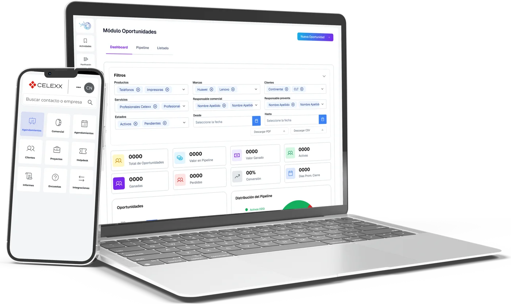
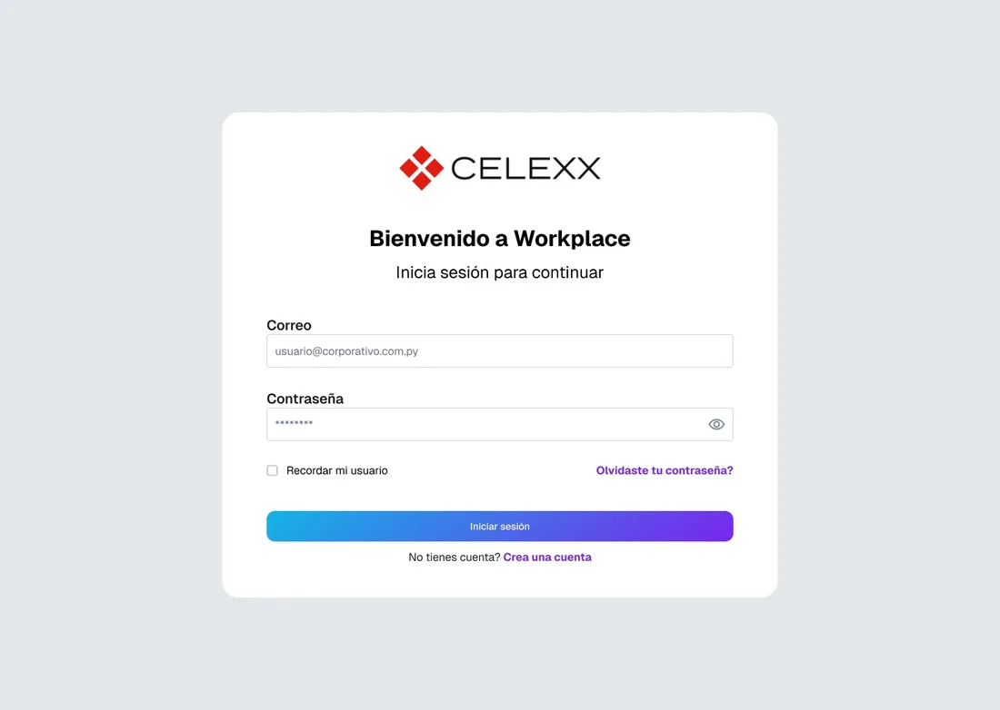
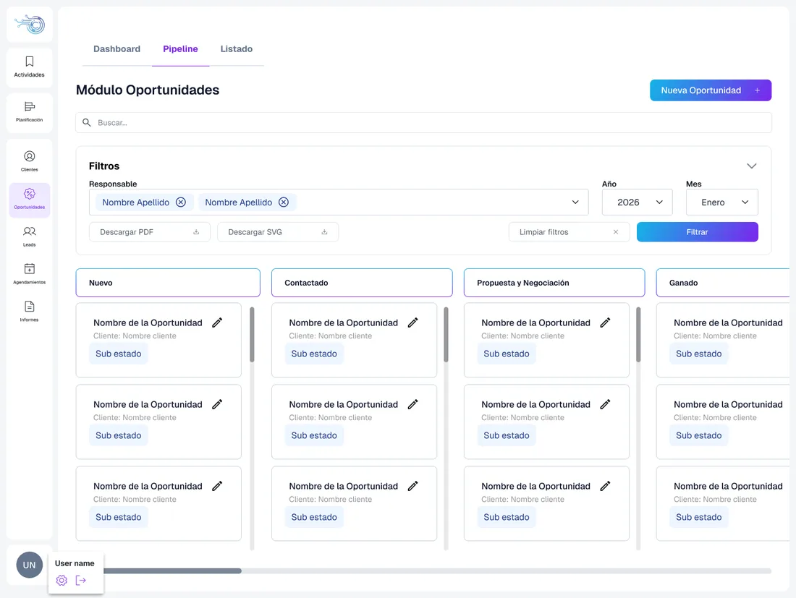
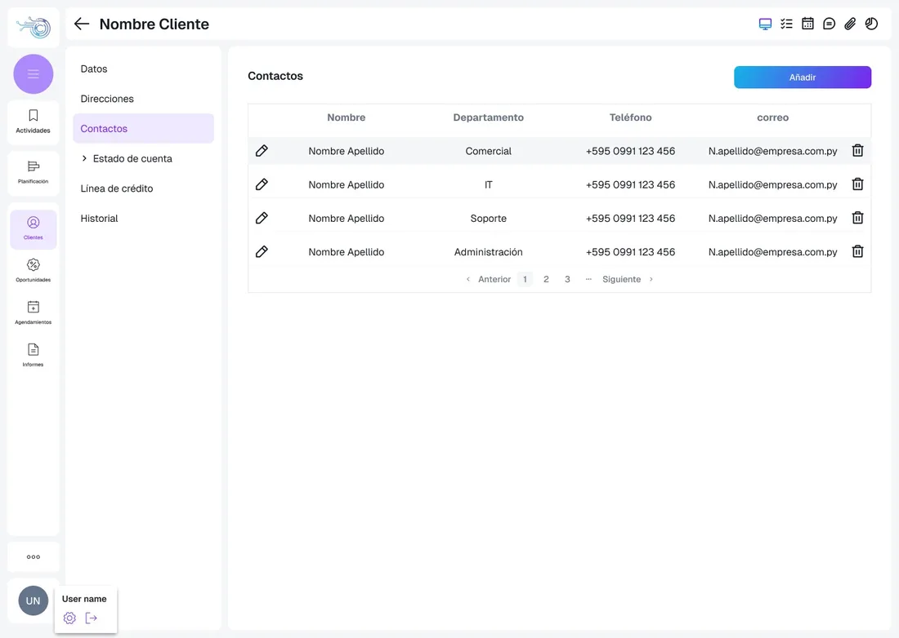
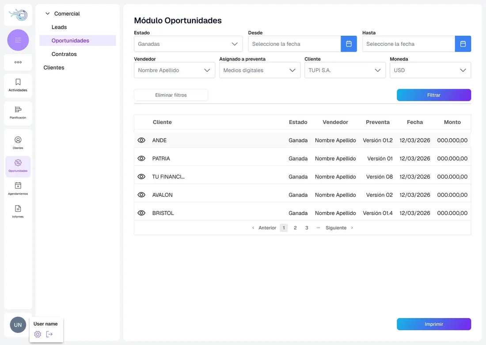

Workplace CRM
Sobre el proyecto
Es un CRM a medida para el equipo comercial de CELEXX SA. Tiene un panel con indicadores, las oportunidades organizadas en tablero Kanban, fichas de clientes y contactos, e informes comerciales.

Pantallas web





1 / 5
Mi colaboración
- Relevamiento del proceso comercial: oportunidades, cotización, presupuesto, clientes, agendamientos y contratos.
- Diseño completo del sistema, desde el login hasta el seguimiento de los proyectos.
- Análisis y definición de las funcionalidades del sistema.
- Análisis de la integración con SAP, a partir de las pantallas de referencia.
- Mantenimiento de la guía de estilos, los componentes y los íconos para desarrollo en React.
- Construcción manual del diseño.